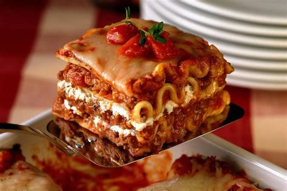

Lasagna

Description
Love lasagna, but do enjoy all the prep work and clean up the comes with it? Try placing the items in a crockpot, yes you heard me, just stack all the ingredients into a slow cooker to reduce the work needed. It will take twice as long compare to baking but less mess.
Ingredients
- Lasagna Noodles
- 2lbs Ground Beef
- Marinara Sauce
- 1lb of Cheddar Cheese
- 1lb of Mozzeralla
- 8oz of Cottage Cheese or Ricotta
- Any vegetable you may want to add
Steps
- Cook ground beef
- While ground beef is cooking, shred you cheese
- Drain and season you ground beef; set aside
- If sauteing veggies, do so now
- In a large bowl; combine beef, veggies, and sauce
- Place a spread of the combined sauce on the bottom of the slow cooker
- Layer noodles on the bottom
- Spread either the ricotta or cottage cheese on the noodles
- Dump a generous helping ontop of the noodles
- Spinkle cheese
- Repeat until no more meat sauce is left
- Finish with a helping of cheese
- Cook low for 8-10 hours or high for 6-8
- Enjoy